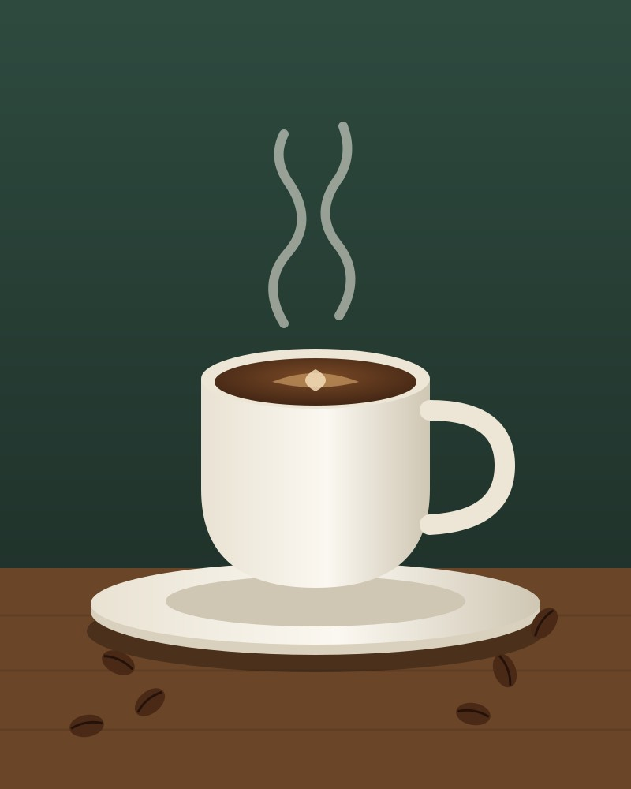
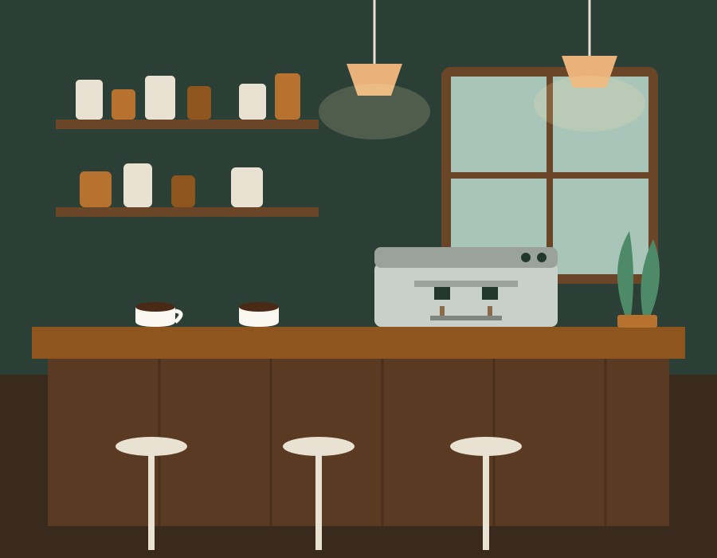

Disangrai pagi ini, diseduh siang ini.
Kami menyangrai biji kopi dari petani Gayo, Toraja, dan Flores di dapur belakang kedai, setiap hari sebelum buka.
Lihat menu

Kedai kecil, 24 kursi.
Kedai Sangrai dibuka pada 2019 oleh dua teman kuliah yang bosan minum kopi gosong. Kami membeli langsung dari petani, menyangrai dalam batch kecil, dan menyeduh satu cangkir pada satu waktu.
Datang untuk bekerja, mengobrol, atau sekadar duduk. Wi-Fi gratis dan colokan ada di setiap meja.
Kunjungi kami
Alamat
Jl. Kemang Raya No. 12
Jakarta Selatan 12730
Jam buka
| Senin – Jumat | 07.00 – 22.00 |
| Sabtu – Minggu | 08.00 – 23.00 |